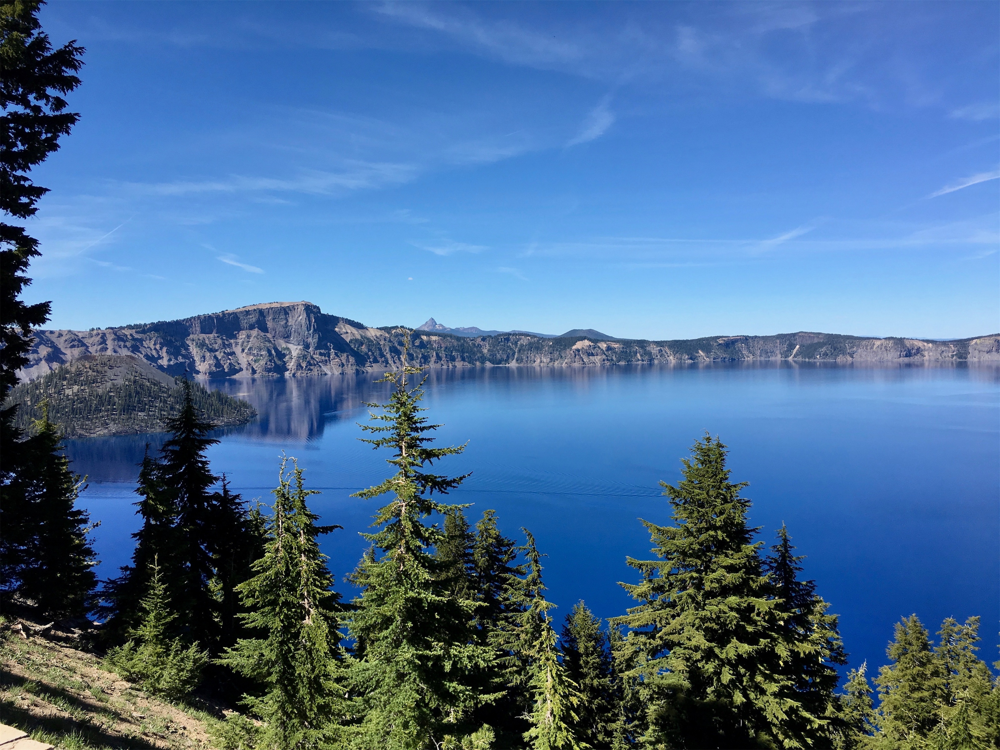
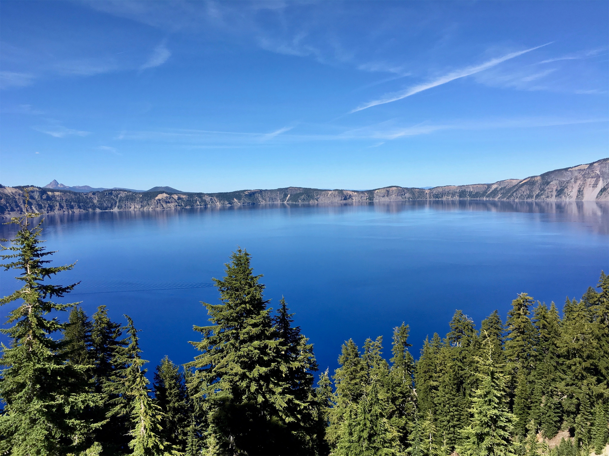
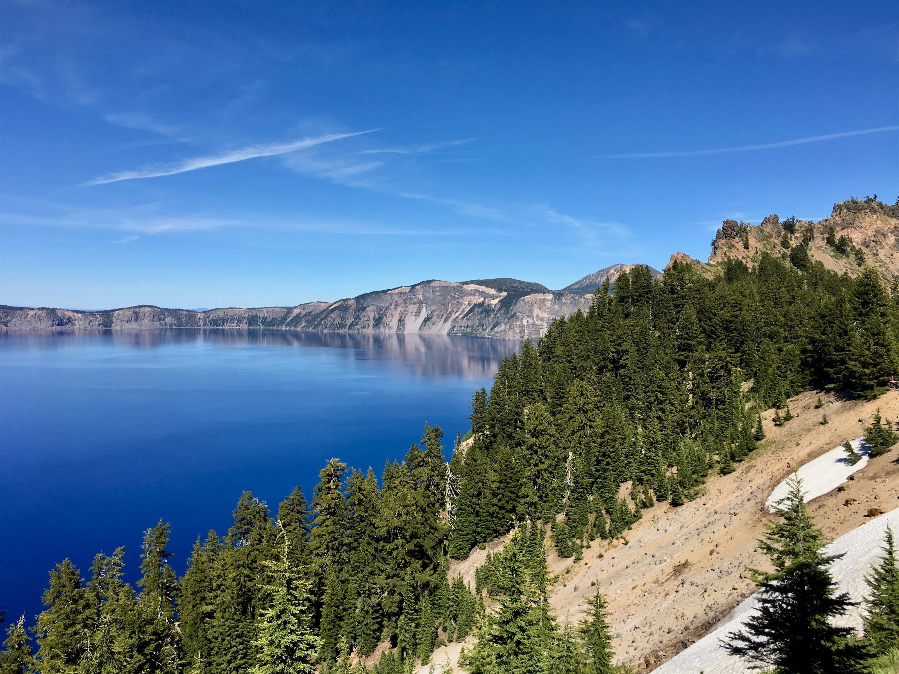
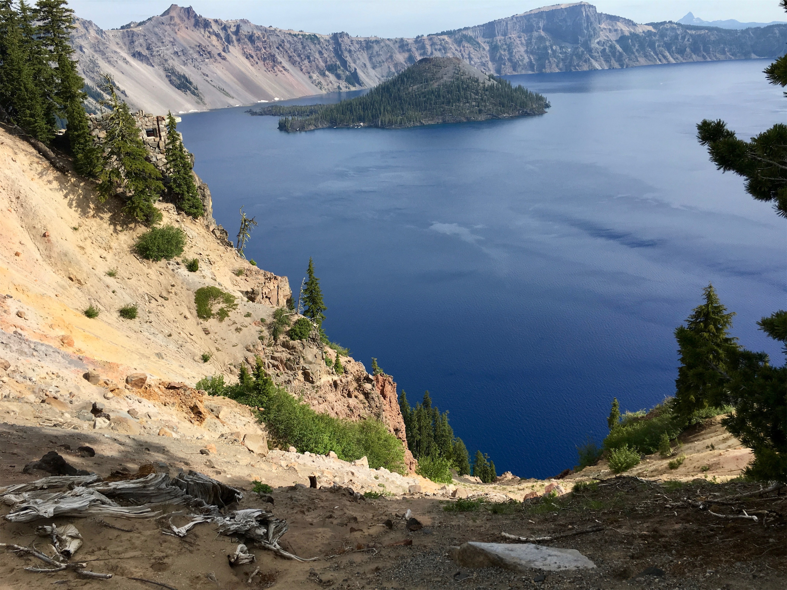
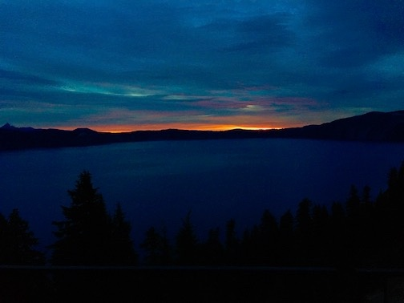
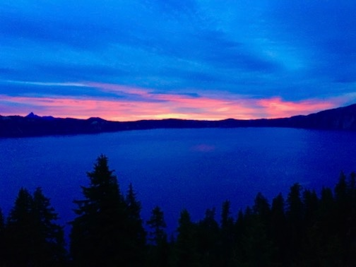

Tuesday, Jul 3, 2018, 2:42 PM PDT
Rim Village Visitor Center, Chemult, OR, United States
79°F Sunny
79°F Sunny
![]()
7/3 Crescent City, CA -> Rim Village Visitor Center, OR 178 mi, 4.25 hr
7/3 Rim Village Visitor Center, OR -> Crater Lake Lodge, OR 9 mi, 1 hr
Trip Total: 5,858 mi
From the Pacific coast, we headed northeast, leaving California’s nine national parks behind. Deb and I were at Crater Lake in 2014, but we didn’t hesitate to make a repeat visit to this gem. We would put seeing the bluer-than-blue water as one of our top take-your-breath-away experiences. The volcano erupted 7,700 years ago, and then the core collapsed, filling with rainwater and snow over the years. It is the deepest lake in the US (almost 2,000 ft), and the purest and clearest lake water in the world. No rivers enter or leave, but the lake amazingly leaks about 2 million gallons/day (no one is quite sure where it goes) and along with evaporation and snow (43 ft/year) and rain, the level stays within about a 1% balance. There is still a little snow left, and we had to put on jackets for the first time on the trip. Wizard Island is a cone volcano within the main caldera.
When we were last here, we stayed in crappy accommodations outside of the park because we didn’t plan the year in advance for the glorious Crater Lake Lodge, but we did so this time, and it is our favorite so far. We had a nice dinner at the lodge dining room. Brad got up for sunrise, and caught the bright orange first sun, followed by pinks and blues. Breakfast consisted of two massive 12” buttermilk pancakes, bacon and cheddar for Deb and marionberry for Brad, that we couldn’t finish. Afterwards, we ended our visit with a hike along the rim in the early morning with only a few other visitors out, so it felt like we had the lake all to ourselves.





